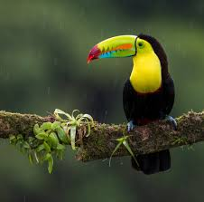
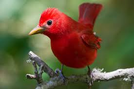
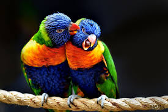
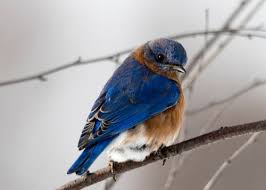
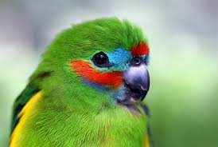
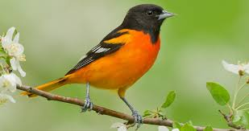
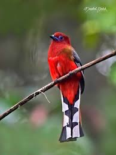

Toucan
Cardinal
 Robin
RobinScarlet Tanager
Blue Joy
Macaw
Born Swallow
Gold Finch
 CanaryStarling
CanaryStarlingAccording to Birdlife International, approximately 5,000 bird species use tropical and subtropical rain forests as their primary habitat. This impressive collection of species exhibits wide variation in body size, shape and color, each species adapting to its unique niche Like toucans, hornbills of Asia and Africa also nest in cavities; however, they go about it in different manners. After selecting a natural tree hollow, female hornbills seal themselves in the cavity with “cement” made of feathers, saliva and feces. A small crack allows the males to feed the females while nesting.
RobinCanaryStarling